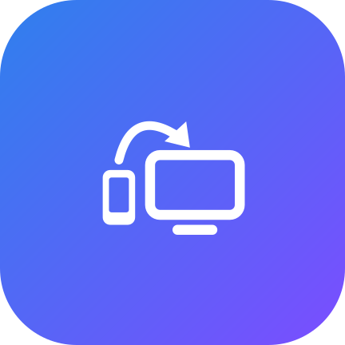

ScreenHopScreenHop turns your Google TV or Fire TV into a screen-mirroring receiver. Mirror an iPhone, iPad or Mac, play videos and music from your phone, or show photos from Windows — no extra hardware.
Screen Mirroring from Control Center, or the AirPlay button in video and music apps, with sound.
Cast videos, music and photos with DLNA from apps that support it, or Windows "Cast to Device".
Runs on Google TV / Android TV and Fire TV (Fire OS). Hardware video decoding, remote-friendly screens.